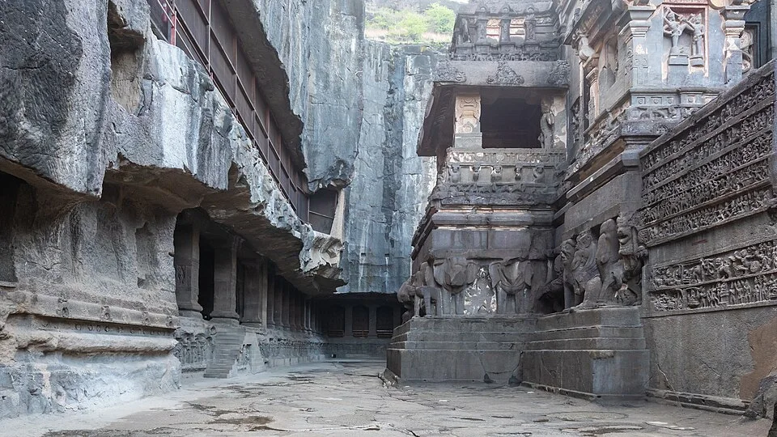

Kailasa rock-cut temple at Ellora
Slide a cut through a schematic Kailasa courtyard, then switch between the historical plan and transverse section.
Inspect source image

Slide a cut through a schematic Kailasa courtyard, then switch between the historical plan and transverse section.
